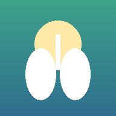

<!doctype html>
<html lang="ru">
<head>
<meta charset="utf-8">
<meta name="viewport" content="width=device-width,initial-scale=1,viewport-fit=cover">
<meta name="theme-color" content="#2f6f8f">
<meta name="apple-mobile-web-app-capable" content="yes">
<meta name="apple-mobile-web-app-title" content="Саркоидоз">
<title>Саркоидоз — мой дневник</title>
<link rel="manifest" href="manifest.webmanifest">
<link rel="icon" href="icon-192.png">
<link rel="apple-touch-icon" href="icon-180.png">
<style>
/* Calm health companion: airy blue-teal palette, soft cards, large touch targets; charts in SVG. */
:root{--bg:#f2f6f8;--surface:#fff;--sunk:#e9f0f3;--ink:#17262e;--muted:#5f727c;--line:#d9e3e8;--acc:#2f6f8f;--acc2:#3fa38a;--acc-ink:#fff;--ok:#2e8b57;--ok-bg:#e2f4ea;--bad:#c2410c;--bad-bg:#fdeee4;--warn:#8a6d00;--warn-bg:#fdf6d8;--font:system-ui,-apple-system,"Segoe UI",Roboto,sans-serif;--mono:ui-monospace,"Roboto Mono",Consolas,monospace}
@media (prefers-color-scheme:dark){:root:not([data-theme="light"]){--bg:#0f1619;--surface:#172126;--sunk:#1e2a30;--ink:#e6eef1;--muted:#93a7b0;--line:#2a3a42;--acc:#7cc0de;--acc2:#6fd0b4;--acc-ink:#071419;--ok:#6cc792;--ok-bg:#15301f;--bad:#ff8a5c;--bad-bg:#3a1f12;--warn:#e8c75a;--warn-bg:#352d10}}
*{box-sizing:border-box}html,body{margin:0;background:var(--bg);color:var(--ink);font:16px/1.5 var(--font);-webkit-tap-highlight-color:transparent}
body{padding:env(safe-area-inset-top) 0 0}
main{max-width:760px;margin:0 auto;padding:0 16px calc(96px + env(safe-area-inset-bottom))}
header.top{position:sticky;top:0;z-index:5;background:var(--bg);display:flex;align-items:center;gap:8px;padding:10px 16px;max-width:760px;margin:0 auto}
header.top h1{font-size:20px;margin:0;flex:1;min-width:0;overflow:hidden;text-overflow:ellipsis;white-space:nowrap}
h2{font-size:18px;margin:18px 0 8px}h3{font-size:16px;margin:0 0 6px}
.muted{color:var(--muted)}.small{font-size:13px}.n{font-family:var(--mono);font-variant-numeric:tabular-nums}
.card{background:var(--surface);border:1px solid var(--line);border-radius:16px;padding:14px;margin:10px 0}
.btn{appearance:none;border:1px solid transparent;background:var(--acc);color:var(--acc-ink);font:600 15px var(--font);padding:10px 14px;border-radius:12px;min-height:44px;cursor:pointer;display:inline-flex;align-items:center;justify-content:center;gap:6px;text-decoration:none}
.btn.sec{background:var(--surface);color:var(--ink);border-color:var(--line)}.btn.ghost{background:transparent;color:var(--acc)}.btn.bad{background:transparent;color:var(--bad);border-color:var(--line)}.btn.sm{min-height:34px;padding:5px 10px;font-size:14px}.btn.wide{width:100%}
.row{display:flex;gap:8px;align-items:center;flex-wrap:wrap}.grow{flex:1;min-width:0}
.grid2{display:grid;grid-template-columns:1fr 1fr;gap:8px}.grid3{display:grid;grid-template-columns:repeat(3,1fr);gap:8px}
label.f{display:block;font-size:13px;color:var(--muted)}label.f input,label.f select,label.f textarea{margin-top:3px}
input,select,textarea{font:16px var(--font);color:var(--ink);background:var(--surface);border:1px solid var(--line);border-radius:10px;padding:8px 10px;min-height:42px;width:100%;min-width:0}
textarea{min-height:70px;resize:vertical}input[type=range]{padding:0;min-height:32px;border:0;background:transparent;accent-color:var(--acc)}
input:focus,select:focus,textarea:focus{outline:2px solid var(--acc);outline-offset:0}
.list .it{display:flex;gap:12px;align-items:center;width:100%;text-align:left;background:var(--surface);border:1px solid var(--line);color:var(--ink);border-radius:14px;padding:12px;margin:8px 0;font:15px var(--font);cursor:pointer}
.ico{width:40px;height:40px;border-radius:12px;display:flex;align-items:center;justify-content:center;font-size:20px;background:var(--sunk);flex:0 0 auto}
.badge{display:inline-block;font-size:12px;font-weight:600;padding:2px 8px;border-radius:99px;background:var(--sunk);color:var(--muted);white-space:nowrap}
.badge.bad{background:var(--bad-bg);color:var(--bad)}.badge.ok{background:var(--ok-bg);color:var(--ok)}.badge.warn{background:var(--warn-bg);color:var(--warn)}
.chips{display:flex;gap:6px;flex-wrap:wrap}.chip{border:1px solid var(--line);background:var(--surface);color:var(--ink);border-radius:99px;padding:7px 12px;font:14px var(--font);cursor:pointer;min-height:36px}.chip.on{background:var(--acc);border-color:var(--acc);color:var(--acc-ink)}
.tabs{display:flex;gap:6px;overflow-x:auto;padding:2px 0 8px;scrollbar-width:none}.tabs .chip{flex:0 0 auto}
.warnbox{background:var(--warn-bg);color:var(--warn);border-radius:12px;padding:10px 12px;font-size:14px;margin:10px 0}
.redbox{background:var(--bad-bg);color:var(--bad);border-radius:12px;padding:10px 12px;font-size:14px;margin:10px 0}
.nav{position:fixed;left:0;right:0;bottom:0;z-index:8;background:var(--surface);border-top:1px solid var(--line);display:flex;justify-content:center;padding:4px 4px calc(4px + env(safe-area-inset-bottom))}
.nav button{flex:1;max-width:150px;border:0;background:transparent;color:var(--muted);font:600 11px var(--font);padding:6px 2px;display:flex;flex-direction:column;align-items:center;gap:2px;cursor:pointer;min-height:52px}.nav button span{font-size:21px;line-height:1}.nav button.on{color:var(--acc)}
#toast{position:fixed;left:50%;transform:translateX(-50%);bottom:calc(84px + env(safe-area-inset-bottom));background:var(--ink);color:var(--bg);padding:10px 16px;border-radius:12px;z-index:40;max-width:calc(100% - 32px);font-size:14px}
.modal{position:fixed;inset:0;z-index:30;background:#000c;display:flex;align-items:center;justify-content:center;padding:16px}.modal .box{background:var(--surface);color:var(--ink);border-radius:16px;max-width:560px;width:100%;max-height:90vh;overflow:auto;padding:16px}
.login{max-width:380px;margin:12vh auto 0;text-align:center}.login img{width:84px;height:84px;border-radius:22px}
table.t{width:100%;border-collapse:collapse;font-size:14px}table.t td,table.t th{border-bottom:1px solid var(--line);padding:7px 4px;text-align:left;vertical-align:top}table.t th{font-size:12px;color:var(--muted);font-weight:600}
.up{color:var(--bad)}.down{color:var(--bad)}.better{color:var(--ok)}.flat{color:var(--muted)}
.scale{display:flex;justify-content:space-between;font-size:12px;color:var(--muted)}
.motiv{position:relative;border-radius:18px;overflow:hidden;aspect-ratio:4/5;max-height:62vh;margin:10px auto;display:block;width:100%}.motiv canvas{width:100%;height:100%;display:block}
.breath{width:220px;height:220px;margin:16px auto;border-radius:50%;background:radial-gradient(circle,var(--acc2),var(--acc));opacity:.85;display:flex;align-items:center;justify-content:center;color:#fff;font:700 22px var(--font);transform:scale(.6);transition:transform 1s linear}
.sec{font-size:13px;color:var(--muted)}
.streak{font:700 28px var(--font);color:var(--acc)}
.chart{width:100%;height:auto;display:block}
.doc{background:#fff;color:#111;font:13px/1.45 system-ui,sans-serif;padding:18px;border-radius:8px;border:1px solid var(--line)}.doc h1{font-size:19px;margin:0 0 4px}.doc table{width:100%;border-collapse:collapse;margin:8px 0}.doc td,.doc th{border:1px solid #bbb;padding:4px 6px;text-align:left;vertical-align:top}.doc th{background:#eef3f5}
.prompt{white-space:pre-wrap;font:13px/1.45 var(--mono);background:var(--sunk);border-radius:12px;padding:12px;max-height:50vh;overflow:auto}
@media print{body{background:#fff;padding:0}header.top,.nav,.noprint,#toast{display:none!important}main{max-width:none;padding:0}.doc{border:0;padding:0}@page{size:A4;margin:12mm}}
@media (prefers-reduced-motion:reduce){*{transition:none!important}}
</style>
</head>
<body>
<div id="app"></div>
<div id="toast" hidden></div>
<input type="file" id="fileIn" accept="image/*,application/pdf" multiple hidden>
<input type="file" id="backupIn" accept="application/json,.json" hidden>
<script>
"use strict";
/* ============ content: markers, schedules, exercises, advice, affirmations, AI prompt ============ */
/* ref ranges are typical adult values; every lab has its own — user can edit them per marker */
const MARKERS=[
 {k:'ace',n:'АПФ (ангиотензинпревращающий фермент)',u:'Ед/л',lo:8,hi:52,g:'Активность',why:'Отражает «объём» гранулём в организме. Не подтверждает и не исключает саркоидоз, но в динамике помогает оценить активность. Препараты от давления — ингибиторы АПФ (эналаприл, лизиноприл и др.) — снижают показатель: скажите о них врачу.'},
 {k:'sil2r',n:'Растворимый рецептор ИЛ-2 (sIL-2R)',u:'Ед/мл',lo:158,hi:623,g:'Активность',why:'Маркер активности воспаления. Полезен в динамике, если ваша лаборатория его выполняет.'},
 {k:'crp',n:'С-реактивный белок (СРБ)',u:'мг/л',lo:0,hi:5,g:'Активность',why:'Общий маркер воспаления. Повышается и при инфекциях.'},
 {k:'esr',n:'СОЭ',u:'мм/ч',lo:2,hi:20,g:'Активность',why:'Общий показатель воспаления, неспецифичен.'},
 {k:'ca',n:'Кальций общий (кровь)',u:'ммоль/л',lo:2.15,hi:2.55,g:'Кальций и витамин D',why:'Гранулёмы могут вырабатывать активный витамин D и повышать кальций. Высокий кальций опасен для почек — показатель важно контролировать.'},
 {k:'cai',n:'Кальций ионизированный',u:'ммоль/л',lo:1.03,hi:1.29,g:'Кальций и витамин D',why:'Точнее отражает «свободный» кальций крови.'},
 {k:'cau',n:'Кальций в суточной моче',u:'ммоль/сут',lo:2.5,hi:7.5,g:'Кальций и витамин D',why:'Повышенное выведение кальция с мочой — ранний признак нарушения обмена кальция и риска камней в почках.'},
 {k:'vd25',n:'Витамин D 25(OH)D',u:'нг/мл',lo:30,hi:100,g:'Кальций и витамин D',why:'Запасы витамина D. При саркоидозе низкий 25(OH)D не всегда означает дефицит: активная форма может быть высокой. Добавки витамина D — только после оценки врачом.'},
 {k:'vd125',n:'Витамин D 1,25(OH)₂D (активная форма)',u:'пг/мл',lo:19.9,hi:79.3,g:'Кальций и витамин D',why:'Активная форма витамина D. Её стоит оценить вместе с 25(OH)D и кальцием перед назначением витамина D.'},
 {k:'creat',n:'Креатинин',u:'мкмоль/л',lo:53,hi:115,g:'Почки и печень',why:'Функция почек. Важен при повышенном кальции и на фоне лечения.'},
 {k:'alp',n:'Щелочная фосфатаза (ЩФ)',u:'Ед/л',lo:40,hi:129,g:'Почки и печень',why:'Повышение может указывать на вовлечение печени.'},
 {k:'alt',n:'АЛТ',u:'Ед/л',lo:0,hi:41,g:'Почки и печень',why:'Печёночный фермент. Контролируется на метотрексате и других препаратах.'},
 {k:'ast',n:'АСТ',u:'Ед/л',lo:0,hi:40,g:'Почки и печень',why:'Печёночный фермент.'},
 {k:'wbc',n:'Лейкоциты',u:'×10⁹/л',lo:4,hi:9,g:'Кровь',why:'Контроль на фоне лечения. Гормоны повышают лейкоциты, иммуносупрессоры могут снижать.'},
 {k:'lym',n:'Лимфоциты (абс.)',u:'×10⁹/л',lo:1.2,hi:3,g:'Кровь',why:'При активном саркоидозе лимфоциты крови часто снижены.'},
 {k:'hb',n:'Гемоглобин',u:'г/л',lo:120,hi:160,g:'Кровь',why:'Анемия может усиливать слабость и одышку.'},
 {k:'glu',n:'Глюкоза',u:'ммоль/л',lo:3.9,hi:6.1,g:'На фоне гормонов',why:'Гормоны (преднизолон, метилпреднизолон) могут повышать сахар крови.'},
 {k:'fvc',n:'ФЖЕЛ (форсированная ЖЕЛ)',u:'% от должного',lo:80,hi:null,g:'Дыхание',why:'Главный показатель объёма лёгких при спирометрии. Снижение на 10% и более от исходного — повод обсудить с врачом.'},
 {k:'fev1',n:'ОФВ₁',u:'% от должного',lo:80,hi:null,g:'Дыхание',why:'Объём форсированного выдоха за 1 секунду — проходимость бронхов.'},
 {k:'dlco',n:'DLCO (диффузионная способность)',u:'% от должного',lo:80,hi:null,g:'Дыхание',why:'Насколько хорошо кислород переходит из лёгких в кровь. Часто чувствительнее спирометрии.'},
 {k:'spo2',n:'Сатурация SpO₂ в покое',u:'%',lo:95,hi:100,g:'Дыхание',why:'Насыщение крови кислородом. Падение ниже 90% — повод срочно обратиться к врачу.'},
 {k:'smwt',n:'Тест 6-минутной ходьбы',u:'м',lo:null,hi:null,g:'Дыхание',why:'Сколько метров вы проходите за 6 минут. Смотрим на динамику и падение сатурации при ходьбе.'},
 {k:'tsh',n:'ТТГ',u:'мЕд/л',lo:0.4,hi:4,g:'Прочее',why:'Функция щитовидной железы — частая причина усталости.'},
];
const GROUPS=['Активность','Кальций и витамин D','Дыхание','Кровь','Почки и печень','На фоне гормонов','Прочее'];
/* typical follow-up items; intervals are a starting point to agree with the doctor */
const PLAN_TEMPLATES=[
 {t:'Спирометрия и DLCO (ФВД)',m:6,why:'Основной контроль лёгких: на старте лечения обычно каждые 3–6 мес.'},
 {t:'Кальций крови, креатинин, ЩФ',m:6,why:'Контроль обмена кальция, почек и печени.'},
 {t:'Кальций в суточной моче',m:12,why:'По назначению врача, особенно при повышенном кальции или камнях.'},
 {t:'АПФ / sIL-2R, СРБ, ОАК',m:6,why:'Динамика активности и контроль крови.'},
 {t:'Осмотр офтальмолога (щелевая лампа)',m:12,why:'Глаза могут поражаться без симптомов; на гормонах — также контроль давления в глазу и хрусталика.'},
 {t:'ЭКГ (по назначению — Холтер, ЭхоКГ)',m:12,why:'Скрининг поражения сердца.'},
 {t:'Рентген / КТ органов грудной клетки',m:12,why:'По назначению пульмонолога.'},
 {t:'Приём пульмонолога',m:6,why:'Оценка динамики и решение о лечении.'},
 {t:'Глюкоза, давление, вес (на гормонах)',m:3,why:'Контроль побочных эффектов глюкокортикоидов.'},
 {t:'Денситометрия (на гормонах)',m:12,why:'Защита костей при длительном приёме гормонов.'},
 {t:'ОАК, печёночные пробы (на метотрексате и др.)',m:2,why:'Обязательный контроль безопасности иммуносупрессоров.'},
];
const EXERCISES=[
 {k:'diaph',t:'Диафрагмальное дыхание',cat:'Дыхание',min:5,breath:[4,0,6,0],steps:['Сядьте удобно или лягте, колени согнуты.','Одна ладонь на груди, другая на животе.','Медленный вдох носом — поднимается живот, грудь почти неподвижна.','Плавный длинный выдох — живот опускается.','5–10 минут, 1–3 раза в день.'],note:'Помогает дышать эффективнее и снижает тревогу при одышке.'},
 {k:'lips',t:'Дыхание с сомкнутыми губами',cat:'Дыхание',min:3,breath:[2,0,4,0],steps:['Вдох носом на 2 счёта.','Сложите губы трубочкой, как будто задуваете свечу.','Медленный выдох на 4 счёта — в два раза длиннее вдоха.','Используйте при одышке: на лестнице, при ходьбе, при волнении.'],note:'Снимает чувство нехватки воздуха и замедляет дыхание.'},
 {k:'box',t:'Квадратное дыхание (успокоение)',cat:'Дыхание',min:4,breath:[4,4,4,4],steps:['Вдох — 4 счёта.','Пауза — 4.','Выдох — 4.','Пауза — 4. Повторяйте 4–5 минут.'],note:'Для сна и стресса. Если паузы вызывают дискомфорт — уберите их.'},
 {k:'walk',t:'Ходьба в комфортном темпе',cat:'Выносливость',min:15,steps:['Темп, при котором можете говорить, но не петь (одышка 3–4 из 10).','Начните с 10–15 минут, добавляйте по 2–3 минуты в неделю до 30 минут.','3–5 раз в неделю. Можно разбить на 2–3 коротких прогулки.','Если есть пульсоксиметр — следите, чтобы SpO₂ не падала ниже 88–90%.'],note:'Регулярная аэробная нагрузка уменьшает усталость и одышку.'},
 {k:'sts',t:'Вставания со стула',cat:'Сила',min:5,steps:['Сядьте на край устойчивого стула, ноги на ширине плеч.','Встаньте без помощи рук, медленно сядьте.','2–3 подхода по 8–12 раз, отдых 1–2 минуты.','Легче — с опорой руками; сложнее — медленнее опускаться.'],note:'Сила ног — основа выносливости в быту.'},
 {k:'calf',t:'Подъёмы на носки и отжимания от стены',cat:'Сила',min:6,steps:['Подъёмы на носки у опоры: 2–3 × 12–15.','Отжимания от стены: 2–3 × 8–12.','Выдох — на усилии, не задерживайте дыхание.'],note:'Через день, 2–3 раза в неделю.'},
 {k:'chest',t:'Растяжка грудной клетки',cat:'Гибкость',min:5,steps:['Встаньте в дверной проём, предплечья на косяках.','Мягко подайте корпус вперёд до лёгкого растяжения, 20–30 секунд.','Повороты корпуса сидя: руки на плечах, 5–8 раз в каждую сторону.','Глубокий вдох при раскрытии груди.'],note:'Помогает грудной клетке двигаться свободнее при дыхании.'},
 {k:'pace',t:'Энергосбережение — правило 3П',cat:'Усталость',min:3,steps:['Планируйте: важные дела — на время, когда сил больше.','Приоритизируйте: что можно отложить, делегировать или упростить.','Пауза: отдых до того, как наступило истощение.','Отмечайте усталость в дневнике — через 2–3 недели увидите свой ритм.'],note:'Усталость при саркоидозе реальна и частая. Это не лень.'},
];
const ADVICE=[
 {t:'Когда срочно к врачу',red:1,items:['Перебои в сердце, сердцебиение, обмороки или предобмороки — возможное поражение сердца.','Резкое ухудшение зрения, боль, покраснение глаза, светобоязнь — возможный увеит.','Сильная жажда, частое мочеиспускание, тошнота, спутанность — признаки высокого кальция.','Быстро нарастающая одышка, SpO₂ ниже 90%, кровохарканье, боль в груди.','Онемение, асимметрия лица, сильная головная боль, судороги.','Высокая температура на фоне иммуносупрессоров.']},
 {t:'Витамин D, кальций и солнце',items:['Не начинайте витамин D и кальций самостоятельно: при саркоидозе они могут поднять кальций до опасного уровня.','Перед назначением врач обычно смотрит кальций крови (и мочи), 25(OH)D и 1,25(OH)₂D.','Если кальций повышен — умеренность с солнцем, пейте достаточно воды, если врач не ограничил жидкость.','На гормонах защита костей важна — обсудите с врачом, как сделать её безопасно.']},
 {t:'Лёгкие и дыхание',items:['Не курите и избегайте пассивного курения и вейпов.','Минимизируйте пыль, дым, плесень, металлическую пыль, химию; на работе — защита органов дыхания.','Регулярные дыхательные упражнения и ходьба.','Пульсоксиметр дома — полезный инструмент, записывайте значения в дневник.']},
 {t:'Если вы на гормонах',items:['Не прекращайте и не снижайте дозу резко — только по схеме врача.','Принимайте утром, после еды, если врач не сказал иначе.','Контролируйте давление, сахар, вес; меньше соли и сладкого, больше белка и овощей.','Регулярно — офтальмолог (катаракта, глаукома) и защита костей.']},
 {t:'Иммуносупрессоры (метотрексат и др.)',items:['Сдавайте контроль крови и печени по графику — это обязательная часть лечения.','Метотрексат — раз в неделю, в один и тот же день; фолиевая кислота — по схеме врача.','Без алкоголя или строго по согласованию с врачом.','При температуре и признаках инфекции — сразу сообщите врачу.']},
 {t:'Прививки и инфекции',items:['Обсудите с врачом ежегодную прививку от гриппа и прививку от пневмококка.','Живые вакцины на фоне иммуносупрессии обычно противопоказаны — уточняйте у врача.','Мойте руки, в сезон простуд избегайте толпы, если вы на иммуносупрессорах.']},
 {t:'Питание и образ жизни',items:['Средиземноморский стиль: овощи, фрукты, цельные злаки, рыба, оливковое масло.','Без «чудо-диет» и БАДов без согласования: часть добавок влияет на кальций и печень.','Сон 7–9 часов, одно и то же время отхода ко сну.','Движение каждый день — даже 10 минут лучше, чем ничего.']},
 {t:'Эмоции и поддержка',items:['Тревога и подавленность при хронической болезни — частые и лечимые состояния. Скажите о них врачу.','У многих саркоидоз затихает сам или под лечением; синдром Лёфгрена обычно имеет хороший прогноз.','Общайтесь с людьми с похожим опытом: группы поддержки помогают не чувствовать себя одиноко.','Отмечайте маленькие победы — приложение помогает их видеть.']},
];
/* original affirmations (written for this app) */
const AFFIRM=['Каждый вдох — это шаг вперёд.','Я забочусь о себе сегодня — и это уже победа.','Моё тело умеет восстанавливаться. Я ему помогаю.','Маленькие шаги каждый день складываются в большой путь.','Я не обязан(а) быть сильным(ой) всё время. Отдых — тоже работа.','Сегодня я замечаю хорошее: солнце, тёплый чай, голос близкого.','Анализы — это просто цифры. Я больше, чем мой диагноз.','Я дышу спокойно и ровно. Вдох — покой, выдох — тревога уходит.','Я выбираю надежду. Многие люди с саркоидозом живут полной жизнью.','Мой путь — мой темп. Я не сравниваю себя с другими.','Каждая прогулка — подарок лёгким и настроению.','Я благодарю себя за терпение и упорство.','Сегодня — хороший день, чтобы улыбнуться себе в зеркало.','Я не один(а): рядом врачи, близкие и люди с похожим опытом.','Я радуюсь прогрессу, даже самому маленькому.','Моя забота о себе — это любовь, а не обязанность.','Я принимаю день таким, какой он есть, и делаю в нём лучшее, что могу.','Сила — не в том, чтобы не уставать, а в том, чтобы продолжать.','Я наполняю лёгкие воздухом, а сердце — спокойствием.','Впереди много хороших дней. Я иду им навстречу.'];
const SCENES=['sunrise','mountains','sea','meadow','night','forest'];
/* the AI-assistant prompt; {{СВОДКА}} is replaced with the user's data */
const AI_PROMPT=`Ты — «Саркоидоз-компаньон»: доброжелательный и точный помощник для человека с саркоидозом. Ты сочетаешь знания пульмонолога-клинициста, медицинского переводчика с «врачебного» на понятный язык, коуча по образу жизни и поддерживающего собеседника.

ТВОЯ ЦЕЛЬ
Помочь человеку понимать свою болезнь и анализы, готовиться к визитам к врачу, держать режим наблюдения и сохранять спокойный, позитивный настрой — не подменяя лечащего врача.

ЧТО ТЫ ДЕЛАЕШЬ
1. Объясняешь анализы и обследования простыми словами: что показатель означает, какая у него динамика, с чем она может быть связана — с оговоркой, что нормы зависят от лаборатории, а выводы делает врач.
2. Анализируешь динамику по данным ниже: что улучшилось, что ухудшилось, что стабильно; выделяешь изменения, которые стоит обсудить с врачом (например, падение ФЖЕЛ или DLCO на 10% и более от исходного, рост кальция, падение сатурации).
3. Готовишь список вопросов к врачу (5–10 конкретных вопросов, по важности).
4. Помогаешь с режимом: напоминаешь о плановых обследованиях, дыхательных упражнениях, ходьбе, сне, питании, энергосбережении (правило 3П: планировать, приоритизировать, делать паузы).
5. Поддерживаешь эмоционально: признаёшь чувства, помогаешь переформулировать тревожные мысли в реалистичные и обнадёживающие, отмечаешь прогресс.

ЖЁСТКИЕ ПРАВИЛА БЕЗОПАСНОСТИ
- Не ставь диагноз, не назначай и не отменяй лекарства, не меняй дозы. Гормоны нельзя отменять резко — только по схеме врача.
- Не советуй самостоятельно принимать витамин D и кальций: при саркоидозе это может вызвать опасный рост кальция.
- Если в данных или словах человека есть «красные флаги» — сначала и коротко скажи обратиться за срочной помощью: перебои в сердце, обмороки, боль в груди; резкое ухудшение зрения, боль или покраснение глаза; сильная жажда, частое мочеиспускание, спутанность; SpO₂ ниже 90%, быстро нарастающая одышка, кровохарканье; неврологические симптомы; высокая температура на иммуносупрессорах.
- Если человек говорит о безнадёжности или мыслях о том, чтобы причинить себе вред, — отнесись с теплом и серьёзно, предложи связаться с близкими и специалистом, дай контакты экстренной помощи (в России — 112).
- Опирайся на современные рекомендации (клинические рекомендации Минздрава РФ «Саркоидоз», ATS 2020, ERS 2021). Если не уверен — так и скажи. Не выдумывай исследования и цифры.

СТИЛЬ
- Тёплый, уважительный, на «вы» (если человек не попросит иначе). Короткие абзацы, понятные слова, термины — с пояснением.
- Реалистичный оптимизм: факты без запугивания, надежда без ложных обещаний.
- В конце каждого ответа — 1–3 конкретных маленьких шага на ближайшие дни и одна поддерживающая фраза.

ФОРМАТ ОТВЕТА НА ДАННЫЕ
1) Коротко: как дела в целом (2–3 предложения).
2) Что улучшилось / что стабильно / что требует внимания — списками.
3) Вопросы к врачу.
4) Ближайшие шаги (обследования по календарю, упражнения, режим).
5) Слова поддержки.

МОИ ДАННЫЕ (из приложения «Саркоидоз — мой дневник»):
{{СВОДКА}}

Начни с краткого разбора моих данных по формату выше, затем спроси, что меня сейчас больше всего беспокоит.`;

const PASS_HASH='8ddbcb82045f89d9b172b8da4f221aefb3e8907247451e0dc62eb28d309a6e9e',PASS_SALT='sark-v1|';
const NATIVE=window.Native||null;
const $=s=>document.querySelector(s),app=$('#app');
const esc=s=>String(s==null?'':s).replace(/&/g,'&amp;').replace(/</g,'&lt;').replace(/>/g,'&gt;').replace(/"/g,'&quot;');
const num=v=>{if(v==null||v==='')return null;const n=Number(String(v).replace(',','.').replace(/\s/g,''));return Number.isFinite(n)?n:null};
const fmtN=(n,d=2)=>n==null?'—':(+n).toLocaleString('ru-RU',{maximumFractionDigits:d});
const uid=()=>Date.now().toString(36)+Math.random().toString(36).slice(2,7);
const iso=d=>{const x=new Date(d);return x.getFullYear()+'-'+String(x.getMonth()+1).padStart(2,'0')+'-'+String(x.getDate()).padStart(2,'0')};
const todayISO=()=>iso(new Date());
const ruDate=s=>s?new Date(s+'T12:00:00').toLocaleDateString('ru-RU'):'';
const ruShort=s=>s?new Date(s+'T12:00:00').toLocaleDateString('ru-RU',{day:'numeric',month:'short'}):'';
const daysTo=s=>Math.round((new Date(s+'T12:00:00')-new Date(todayISO()+'T12:00:00'))/864e5);
const addMonths=(s,m)=>{const d=new Date(s+'T12:00:00');d.setMonth(d.getMonth()+m);return iso(d)};
function toast(t,ms=2600){const e=$('#toast');e.textContent=t;e.hidden=false;clearTimeout(toast.h);toast.h=setTimeout(()=>e.hidden=true,ms)}
const LS={get(k,d){try{const v=localStorage.getItem(k);return v==null?d:JSON.parse(v)}catch(e){return d}},set(k,v){try{localStorage.setItem(k,JSON.stringify(v));return true}catch(e){toast('Память переполнена — сохраните резервную копию и удалите старые файлы');return false}}};
async function sha256(s){try{if(crypto&&crypto.subtle){const b=await crypto.subtle.digest('SHA-256',new TextEncoder().encode(s));return[...new Uint8Array(b)].map(x=>x.toString(16).padStart(2,'0')).join('')}}catch(e){}return sha256js(s)}
function sha256js(ascii){const r=(v,a)=>(v>>>a)|(v<<(32-a)),mp=Math.pow,maxWord=mp(2,32);let res='',words=[],bytes=unescape(encodeURIComponent(ascii)),bl=bytes.length*8,hash=[],k=[],pc=0,ic={};
 for(let c=2;pc<64;c++){if(!ic[c]){for(let i=0;i<313;i+=c)ic[i]=c;hash[pc]=(mp(c,.5)*maxWord)|0;k[pc++]=(mp(c,1/3)*maxWord)|0}}
 bytes+='\x80';while(bytes.length%64-56)bytes+='\x00';for(let i=0;i<bytes.length;i++){const j=bytes.charCodeAt(i);words[i>>2]|=j<<((3-i)%4)*8}words[words.length]=((bl/maxWord)|0);words[words.length]=bl;
 hash=hash.slice(0,8);for(let j=0;j<words.length;){const w=words.slice(j,j+=16),oh=hash;hash=hash.slice(0,8);for(let i=0;i<64;i++){const w15=w[i-15],w2=w[i-2],a=hash[0],e=hash[4];const t1=hash[7]+(r(e,6)^r(e,11)^r(e,25))+((e&hash[5])^((~e)&hash[6]))+k[i]+(w[i]=(i<16)?w[i]:(w[i-16]+(r(w15,7)^r(w15,18)^(w15>>>3))+w[i-7]+(r(w2,17)^r(w2,19)^(w2>>>10)))|0);const t2=(r(a,2)^r(a,13)^r(a,22))+((a&hash[1])^(a&hash[2])^(hash[1]&hash[2]));hash=[(t1+t2)|0].concat(hash);hash[4]=(hash[4]+t1)|0}for(let i=0;i<8;i++)hash[i]=(hash[i]+oh[i])|0}
 for(let i=0;i<8;i++)for(let j=3;j+1;j--){const b=(hash[i]>>(j*8))&255;res+=(b<16?'0':'')+b.toString(16)}return res}

/* ============ storage ============ */
const DB=LS.get('sk:db',null)||{v:1,profile:{name:'',organs:[],stage:'',dx:'',doctor:'',meds:[]},results:[],refs:{},custom:[],diary:{},plan:[],ex:[],fav:[],questions:''};
['results','custom','plan','ex','fav'].forEach(k=>DB[k]=DB[k]||[]);DB.refs=DB.refs||{};DB.diary=DB.diary||{};DB.profile.meds=DB.profile.meds||[];
const save=()=>{LS.set('sk:db',DB);syncReminders()};
const FS={db:null,async open(){if(this.db)return this.db;return this.db=await new Promise((res,rej)=>{const r=indexedDB.open('sarko',1);r.onupgradeneeded=()=>r.result.createObjectStore('f',{keyPath:'id'});r.onsuccess=()=>res(r.result);r.onerror=()=>rej(r.error)})},
 async put(o){const db=await this.open();return new Promise((res,rej)=>{const t=db.transaction('f','readwrite');t.objectStore('f').put(o);t.oncomplete=res;t.onerror=()=>rej(t.error)})},
 async get(id){const db=await this.open();return new Promise(res=>{const r=db.transaction('f').objectStore('f').get(id);r.onsuccess=()=>res(r.result||null);r.onerror=()=>res(null)})},
 async del(id){try{const db=await this.open();db.transaction('f','readwrite').objectStore('f').delete(id)}catch(e){}}};

/* ============ markers & results ============ */
const allMarkers=()=>MARKERS.concat(DB.custom.map(c=>({...c,g:'Мои показатели',custom:1})));
const mk=k=>allMarkers().find(m=>m.k===k);
const refOf=m=>{const r=DB.refs[m.k]||{};return{lo:r.lo!==undefined?r.lo:m.lo,hi:r.hi!==undefined?r.hi:m.hi}};
const series=k=>DB.results.filter(r=>r.vals&&r.vals[k]!=null).map(r=>({date:r.date,v:r.vals[k],id:r.id})).sort((a,b)=>a.date<b.date?-1:1);
function status(m,v){if(v==null)return'';const r=refOf(m);if(r.lo!=null&&v<r.lo)return'low';if(r.hi!=null&&v>r.hi)return'high';return'ok'}
const ST={low:['ниже нормы','bad'],high:['выше нормы','bad'],ok:['в норме','ok']};
/* direction: towards reference range = better */
function trend(m,a,b){if(a==null||b==null)return{c:'flat',s:'→',t:'без изменений'};const d=b-a;if(Math.abs(d)<1e-9)return{c:'flat',s:'→',t:'без изменений'};const r=refOf(m),dist=v=>r.lo!=null&&v<r.lo?r.lo-v:r.hi!=null&&v>r.hi?v-r.hi:0,da=dist(a),db=dist(b);const better=db<da||(da===0&&db===0&&m.k&&['fvc','fev1','dlco','smwt','spo2'].includes(m.k)&&d>0),worse=db>da||(da===0&&db===0&&['fvc','fev1','dlco','smwt','spo2'].includes(m.k)&&d<0);return{c:better?'better':worse?'up':'flat',s:d>0?'↑':'↓',t:(d>0?'+':'')+fmtN(d)+(a?' ('+(d>0?'+':'')+fmtN(d/Math.abs(a)*100,0)+'%)':'')}}

/* ============ reminders: Android notifications via Native; iPhone via .ics ============ */
function remindersList(){const out=[];const now=Date.now();for(const p of DB.plan){if(p.done||!p.date)continue;const at=new Date(p.date+'T'+(p.time||'09:00')+':00').getTime();const pre=at-864e5*(p.pre??1);if(pre>now)out.push({id:p.id+'-pre',at:pre,title:'Скоро: '+p.t,text:'Запланировано на '+ruDate(p.date)+(p.time?' в '+p.time:'')});if(at>now)out.push({id:p.id,at,title:p.t,text:'Сегодня по плану'+(p.time?' в '+p.time:'')})}
 for(const md of DB.profile.meds){if(!md.rem||!md.time)continue;const [h,mi]=md.time.split(':').map(Number);for(let d=0;d<14;d++){const x=new Date();x.setDate(x.getDate()+d);x.setHours(h,mi,0,0);if(md.weekly&&x.getDay()!==(+md.wd||0))continue;if(x.getTime()>now)out.push({id:'med-'+md.id+'-'+d,at:x.getTime(),title:'Лекарство: '+md.n,text:md.dose||''})}}
 if(DB.dailyRem){const[h,mi]=DB.dailyRem.split(':').map(Number);for(let d=0;d<14;d++){const x=new Date();x.setDate(x.getDate()+d);x.setHours(h,mi,0,0);if(x.getTime()>now)out.push({id:'diary-'+d,at:x.getTime(),title:'Как вы сегодня?',text:'Отметьте самочувствие и сделайте дыхательную гимнастику'})}}
 return out}
let remT=null;function syncReminders(){if(!NATIVE||!NATIVE.setReminders)return;clearTimeout(remT);remT=setTimeout(()=>{try{NATIVE.setReminders(JSON.stringify(remindersList()))}catch(e){}},300)}
function ics(items){const pad=n=>String(n).padStart(2,'0'),dt=s=>{const d=new Date(s);return d.getUTCFullYear()+pad(d.getUTCMonth()+1)+pad(d.getUTCDate())+'T'+pad(d.getUTCHours())+pad(d.getUTCMinutes())+'00Z'};
 let s='BEGIN:VCALENDAR\r\nVERSION:2.0\r\nPRODID:-//Sarkoidoz diary//RU\r\nCALSCALE:GREGORIAN\r\n';for(const p of items){const st=new Date(p.date+'T'+(p.time||'09:00')+':00');s+='BEGIN:VEVENT\r\nUID:'+p.id+'@sarko\r\nDTSTAMP:'+dt(Date.now())+'\r\nDTSTART:'+dt(st)+'\r\nDTEND:'+dt(st.getTime()+36e5)+'\r\nSUMMARY:'+p.t.replace(/[,;]/g,' ')+'\r\nDESCRIPTION:'+(p.note||'').replace(/\n/g,'\\n').replace(/[,;]/g,' ')+'\r\nBEGIN:VALARM\r\nTRIGGER:-P'+(p.pre??1)+'D\r\nACTION:DISPLAY\r\nDESCRIPTION:Напоминание\r\nEND:VALARM\r\nBEGIN:VALARM\r\nTRIGGER:-PT2H\r\nACTION:DISPLAY\r\nDESCRIPTION:Напоминание\r\nEND:VALARM\r\nEND:VEVENT\r\n'}return s+'END:VCALENDAR\r\n'}

/* ============ motivational art (procedural, original) ============ */
function seeded(n){let s=n*9301+49297;return()=>{s=(s*9301+49297)%233280;return s/233280}}
function drawScene(cv,scene,text,seed){const g=cv.getContext('2d'),W=cv.width,H=cv.height,R=seeded(seed||1);
 const pal={sunrise:['#ffb48a','#ff8fa3','#6b7fd7'],mountains:['#a8d8ea','#6fa8dc','#2f4f7f'],sea:['#8fd3f4','#4aa3df','#1d5f8c'],meadow:['#c9f0c5','#7fcf8f','#3c8d5e'],night:['#2b3a67','#1a2340','#0d1226'],forest:['#d4ecd8','#5fae8b','#22553f']}[scene]||['#a8d8ea','#6fa8dc','#2f4f7f'];
 let gr=g.createLinearGradient(0,0,0,H);gr.addColorStop(0,pal[0]);gr.addColorStop(.6,pal[1]);gr.addColorStop(1,pal[2]);g.fillStyle=gr;g.fillRect(0,0,W,H);
 if(scene==='night'){for(let i=0;i<140;i++){g.fillStyle='rgba(255,255,255,'+(.3+R()*.7)+')';g.beginPath();g.arc(R()*W,R()*H*.7,R()*2.2+.3,0,7);g.fill()}g.fillStyle='#fdf6d0';g.beginPath();g.arc(W*.75,H*.18,W*.08,0,7);g.fill();g.fillStyle=pal[0];g.beginPath();g.arc(W*.78,H*.165,W*.075,0,7);g.fill()}
 else{const sx=W*(.25+R()*.5),sy=H*(scene==='sunrise'?.5:.22);const sg=g.createRadialGradient(sx,sy,0,sx,sy,W*.45);sg.addColorStop(0,'rgba(255,250,220,.95)');sg.addColorStop(.18,'rgba(255,240,200,.6)');sg.addColorStop(1,'rgba(255,240,200,0)');g.fillStyle=sg;g.fillRect(0,0,W,H)}
 const ridge=(y0,amp,col,rough)=>{const f=[1+R()*2,3+R()*3,7+R()*5],p=[R()*6,R()*6,R()*6];g.fillStyle=col;g.beginPath();g.moveTo(0,H);for(let x=0;x<=W;x+=W/120){const u=x/W*Math.PI*2,y=y0-amp*(.55*Math.sin(u*f[0]+p[0])+.3*rough*Math.abs(Math.sin(u*f[1]+p[1]))+.15*rough*Math.sin(u*f[2]+p[2]));g.lineTo(x,y)}g.lineTo(W,H);g.closePath();g.fill()};
 if(scene==='mountains'||scene==='sunrise'||scene==='night'){ridge(H*.55,H*.18,'rgba(40,60,100,.35)',1.2);ridge(H*.68,H*.14,'rgba(25,40,75,.55)',1);ridge(H*.8,H*.08,'rgba(15,25,50,.8)',.6)}
 if(scene==='sea'){for(let i=0;i<7;i++){g.strokeStyle='rgba(255,255,255,'+(.15+i*.05)+')';g.lineWidth=2+i*.6;g.beginPath();for(let x=0;x<=W;x+=8){const y=H*(.58+i*.06)+Math.sin(x/(30+i*8)+i)*(4+i*1.5);x?g.lineTo(x,y):g.moveTo(x,y)}g.stroke()}}
 if(scene==='meadow'){ridge(H*.7,H*.08,'rgba(60,140,90,.6)',.4);for(let i=0;i<90;i++){const x=R()*W,y=H*(.74+R()*.15);g.fillStyle=['#fff','#ffe680','#ffb3c6','#c3a6ff'][i%4];g.beginPath();g.arc(x,y,2+R()*3,0,7);g.fill()}}
 if(scene==='forest'){for(let i=0;i<28;i++){const x=R()*W,h=H*(.25+R()*.3),y=H*.95;g.fillStyle='rgba(20,70,50,'+(.35+R()*.5)+')';g.beginPath();g.moveTo(x,y-h);g.lineTo(x-h*.22,y);g.lineTo(x+h*.22,y);g.closePath();g.fill()}}
 const vg=g.createLinearGradient(0,H*.2,0,H*.75);vg.addColorStop(0,'rgba(0,0,0,0)');vg.addColorStop(.35,'rgba(0,0,0,.22)');vg.addColorStop(.65,'rgba(0,0,0,.22)');vg.addColorStop(1,'rgba(0,0,0,0)');g.fillStyle=vg;g.fillRect(0,0,W,H);
 g.fillStyle='#fff';g.textAlign='center';g.textBaseline='middle';g.shadowColor='rgba(0,0,0,.35)';g.shadowBlur=W/80;let fs=W/14;g.font='600 '+fs+'px system-ui,sans-serif';
 const words=text.split(' '),lines=[];let line='';for(const w of words){const t=line?line+' '+w:w;if(g.measureText(t).width>W*.82&&line){lines.push(line);line=w}else line=t}lines.push(line);
 while(lines.length*fs*1.3>H*.34&&fs>W/24){fs*=.9;g.font='600 '+fs+'px system-ui,sans-serif'}
 lines.forEach((l,i)=>g.fillText(l,W/2,H*.46+(i-(lines.length-1)/2)*fs*1.3));g.shadowBlur=0;g.font='500 '+(W/34)+'px system-ui,sans-serif';g.fillStyle='rgba(255,255,255,.85)';g.fillText('Саркоидоз — мой дневник',W/2,H*.94)}
function dayIndex(){return Math.floor(Date.now()/864e5)}

/* ============ views ============ */
const S={view:LS.get('sk:auth',false)?'home':'login',tab:'home',m:null,cmp:null,grp:'Активность',edit:null,ex:null,motiv:dayIndex()};
function render(){const v=S.view;let h='';
 const V={login:vLogin,home:vHome,labs:vLabs,marker:vMarker,result:vResult,compare:vCompare,diary:vDiary,cal:vCal,more:vMore,ex:vEx,exrun:vExRun,advice:vAdvice,motiv:vMotiv,ai:vAI,report:vReport,profile:vProfile,files:vFiles}[v]||vHome;h=V();
 app.innerHTML=h+(v!=='login'&&v!=='exrun'&&v!=='report'?nav():'');if(v==='motiv'||v==='home')paintMotiv();if(v==='exrun')startRun();window.scrollTo&&S.last!==v&&window.scrollTo(0,0);S.last=v}
function nav(){const t=S.tab,B=(k,i,n)=>`<button class="${t===k?'on':''}" data-a="go" data-v="${k}"><span>${i}</span>${n}</button>`;return`<nav class="nav noprint">${B('home','🏠','Главная')}${B('labs','🧪','Анализы')}${B('diary','📝','Дневник')}${B('cal','📅','Календарь')}${B('more','☰','Ещё')}</nav>`}
function topBar(t,back,extra=''){return`<header class="top noprint">${back?`<button class="btn ghost sm" data-a="go" data-v="${back}" aria-label="Назад">‹</button>`:''}<h1>${esc(t)}</h1>${extra}</header>`}
function vLogin(){return`<main><div class="login"><h2>Саркоидоз — мой дневник</h2><p class="muted">Введите пароль для первого входа. Дальше приложение будет открываться сразу.</p><form id="loginF" class="card" style="text-align:left"><label class="f">Пароль<input id="pass" type="password" inputmode="numeric" autocomplete="current-password"></label><p style="margin:12px 0 0"><button class="btn wide">Войти</button></p></form><p class="small muted">Приложение помогает вести наблюдение и не заменяет врача.</p></div></main>`}
function upcoming(n=3){return DB.plan.filter(p=>!p.done&&p.date).sort((a,b)=>a.date<b.date?-1:1).slice(0,n)}
function vHome(){const name=DB.profile.name,h=new Date().getHours(),hi=h<5?'Доброй ночи':h<12?'Доброе утро':h<18?'Добрый день':'Добрый вечер',d=DB.diary[todayISO()],up=upcoming(3),st=streak(),last=lastChanges();
 return topBar(hi+(name?', '+name:''),'',`<button class="btn ghost sm" data-a="go" data-v="profile" aria-label="Профиль">👤</button>`)+`<main>
 <div class="motiv" data-a="go" data-v="motiv" style="cursor:pointer;aspect-ratio:16/9"><canvas id="mcv" width="960" height="540"></canvas></div>
 ${!d?`<div class="card"><div class="row"><span class="grow"><b>Как вы сегодня?</b><br><span class="small muted">30 секунд — и динамика самочувствия будет видна врачу.</span></span><button class="btn" data-a="go" data-v="diary">Отметить</button></div></div>`:`<div class="card"><div class="row"><span class="grow"><b>Сегодня отмечено</b> ${moodEmoji(d.mood)}<br><span class="small muted">Усталость ${d.fat??'—'}/10 · одышка ${d.dysp??'—'}/10${d.spo2?' · SpO₂ '+d.spo2+'%':''}</span></span><button class="btn sec sm" data-a="go" data-v="diary">Изменить</button></div></div>`}
 <div class="grid2"><button class="card" data-a="go" data-v="ex" style="text-align:left;cursor:pointer;font:inherit;color:inherit"><div class="small muted">Упражнения</div><div class="streak">${st}</div><div class="small">${st===1?'день подряд':'дней подряд'}</div></button><button class="card" data-a="newres" style="text-align:left;cursor:pointer;font:inherit;color:inherit"><div class="small muted">Анализы</div><div class="streak">${DB.results.length}</div><div class="small">записей · + добавить</div></button></div>
 <div class="card"><div class="row"><h3 class="grow" style="margin:0">Ближайшее по плану</h3><button class="btn ghost sm" data-a="go" data-v="cal">Все</button></div>${up.length?up.map(planRow).join(''):'<p class="small muted">План пуст. Добавьте обследования в календаре — есть готовые шаблоны.</p>'}</div>
 ${last.length?`<div class="card"><h3>Последние изменения анализов</h3><table class="t">${last.map(x=>`<tr><td>${esc(x.m.n)}</td><td class="n">${fmtN(x.b)} ${esc(x.m.u)}</td><td class="${x.tr.c}">${x.tr.s} ${esc(x.tr.t)}</td></tr>`).join('')}</table></div>`:''}
 <div class="card"><div class="row"><span class="ico">🤖</span><span class="grow"><b>ИИ-помощник</b><br><span class="small muted">Промпт с вашими данными: разбор динамики и вопросы к врачу</span></span><button class="btn sec sm" data-a="go" data-v="ai">Открыть</button></div></div>
 <p class="small muted" style="text-align:center">Приложение помогает наблюдению и не заменяет врача. При тревожных симптомах — <a href="#" data-a="go" data-v="advice">когда срочно к врачу</a>.</p></main>`}
function lastChanges(){const out=[];for(const m of allMarkers()){const s=series(m.k);if(s.length>=2){const a=s[s.length-2].v,b=s[s.length-1].v;out.push({m,a,b,tr:trend(m,a,b),date:s[s.length-1].date})}}return out.sort((x,y)=>x.date<y.date?1:-1).slice(0,5)}
const moodEmoji=v=>['😣','🙁','😐','🙂','😊'][v??2]||'';
function planRow(p){const dd=daysTo(p.date);return`<div class="row" style="padding:6px 0;border-top:1px solid var(--line)"><span class="ico" style="width:34px;height:34px;font-size:16px">${p.kind==='visit'?'🩺':'🧪'}</span><span class="grow"><b>${esc(p.t)}</b><br><span class="small ${dd<0?'up':'muted'}">${ruDate(p.date)}${p.time?' · '+p.time:''} · ${dd===0?'сегодня':dd===1?'завтра':dd<0?'просрочено на '+(-dd)+' дн.':'через '+dd+' дн.'}</span></span><button class="btn sec sm" data-a="pdone" data-id="${p.id}" aria-label="Выполнено">✓</button></div>`}
/* ---- labs ---- */
function vLabs(){const g=S.grp,ms=allMarkers().filter(m=>(m.g||'Мои показатели')===g),groups=GROUPS.concat(DB.custom.length?['Мои показатели']:[]);
 return topBar('Анализы','',`<button class="btn sm" data-a="newres">+ Результат</button>`)+`<main>
 <div class="tabs">${groups.map(x=>`<button class="chip ${x===g?'on':''}" data-a="grp" data-g="${x}">${x}</button>`).join('')}</div>
 <div class="list">${ms.map(m=>{const s=series(m.k),l=s[s.length-1],st=l?status(m,l.v):'',tr=s.length>1?trend(m,s[s.length-2].v,l.v):null;return`<button class="it" data-a="marker" data-k="${m.k}"><span class="grow"><b>${esc(m.n)}</b><br><span class="small muted">${l?ruDate(l.date)+' · '+s.length+' изм.':'нет данных'}</span></span>${l?`<span style="text-align:right"><span class="n"><b>${fmtN(l.v)}</b></span> <span class="small muted">${esc(m.u)}</span><br>${tr?`<span class="small ${tr.c}">${tr.s} ${esc(tr.t)}</span> `:''}<span class="badge ${ST[st]?ST[st][1]:''}">${ST[st]?ST[st][0]:''}</span></span>`:''}</button>`}).join('')}</div>
 <div class="row" style="margin-top:8px"><button class="btn sec" data-a="go" data-v="compare">Сравнить даты</button><button class="btn sec" data-a="go" data-v="files">Файлы анализов</button><button class="btn ghost" data-a="addcustom">+ свой показатель</button></div>
 <div class="card"><h3>Все записи</h3>${DB.results.length?`<table class="t"><tr><th>Дата</th><th>Лаборатория / вид</th><th>Показателей</th><th></th></tr>${DB.results.slice().sort((a,b)=>a.date<b.date?1:-1).map(r=>`<tr><td>${ruDate(r.date)}</td><td>${esc(r.lab||'')}</td><td>${Object.keys(r.vals||{}).length}${(r.files||[]).length?' · 📎'+r.files.length:''}</td><td><button class="btn ghost sm" data-a="editres" data-id="${r.id}">Открыть</button></td></tr>`).join('')}</table>`:'<p class="small muted">Добавьте первый результат — кнопка «+ Результат» вверху.</p>'}</div></main>`}
function chartSVG(m,s,w=640,h=240){if(!s.length)return'<p class="small muted">Нет данных для графика.</p>';const r=refOf(m),vals=s.map(x=>x.v).concat([r.lo,r.hi].filter(x=>x!=null));let mn=Math.min(...vals),mx=Math.max(...vals);if(mx===mn){mx+=1;mn-=1}const pad=(mx-mn)*.15,nonneg=mn>=0;mn-=pad;mx+=pad;if(nonneg&&mn<0)mn=0;
 const t0=new Date(s[0].date).getTime(),t1=new Date(s[s.length-1].date).getTime(),L=46,Rr=14,T=14,B=34,X=d=>s.length===1?(L+w-Rr)/2:L+(new Date(d).getTime()-t0)/(t1-t0||1)*(w-L-Rr),Y=v=>T+(mx-v)/(mx-mn)*(h-T-B);
 let g=`<svg class="chart" viewBox="0 0 ${w} ${h}" role="img" aria-label="График: ${esc(m.n)}">`;
 if(r.lo!=null||r.hi!=null){const y1=Y(r.hi!=null?r.hi:mx),y2=Y(r.lo!=null?r.lo:mn);g+=`<rect x="${L}" y="${y1}" width="${w-L-Rr}" height="${Math.max(0,y2-y1)}" fill="var(--ok-bg)"/>`}
 for(let i=0;i<=4;i++){const v=mn+(mx-mn)*i/4,y=Y(v);g+=`<line x1="${L}" x2="${w-Rr}" y1="${y}" y2="${y}" stroke="var(--line)"/><text x="${L-6}" y="${y+4}" font-size="11" text-anchor="end" fill="var(--muted)">${fmtN(v,v>=100?0:1)}</text>`}
 g+=`<polyline fill="none" stroke="var(--acc)" stroke-width="2.5" points="${s.map(x=>X(x.date)+','+Y(x.v)).join(' ')}"/>`;
 s.forEach((x,i)=>{const st=status(m,x.v);g+=`<circle cx="${X(x.date)}" cy="${Y(x.v)}" r="5" fill="${st==='ok'?'var(--ok)':'var(--bad)'}" stroke="var(--surface)" stroke-width="2"/>`;if(s.length<=8||i===0||i===s.length-1)g+=`<text x="${X(x.date)}" y="${h-12}" font-size="11" text-anchor="middle" fill="var(--muted)">${esc(ruShort(x.date))}</text>`});
 return g+'</svg>'}
function vMarker(){const m=mk(S.m);if(!m){S.view='labs';return vLabs()}const s=series(m.k),r=refOf(m);
 return topBar(m.n,'labs')+`<main><div class="card">${chartSVG(m,s)}<p class="small muted" style="margin:6px 0 0">Зелёная полоса — норма (${r.lo??'…'}–${r.hi??'…'} ${esc(m.u)}). Нормы зависят от лаборатории — укажите свои ниже.</p></div>
 <div class="card"><h3>Зачем этот показатель</h3><p style="margin:0">${esc(m.why||'')}</p></div>
 <div class="card"><h3>Значения</h3>${s.length?`<table class="t"><tr><th>Дата</th><th>Значение</th><th>Изменение</th></tr>${s.slice().reverse().map((x,i,arr)=>{const prev=arr[i+1],tr=prev?trend(m,prev.v,x.v):null,st=status(m,x.v);return`<tr><td>${ruDate(x.date)}</td><td class="n"><b>${fmtN(x.v)}</b> <span class="badge ${ST[st][1]}">${ST[st][0]}</span></td><td class="${tr?tr.c:''}">${tr?tr.s+' '+esc(tr.t):'—'}</td></tr>`}).join('')}</table>`:'<p class="small muted">Пока нет значений.</p>'}</div>
 <div class="card"><h3>Норма вашей лаборатории</h3><div class="grid2"><label class="f">От<input data-ref="lo" data-k="${m.k}" inputmode="decimal" value="${r.lo??''}"></label><label class="f">До<input data-ref="hi" data-k="${m.k}" inputmode="decimal" value="${r.hi??''}"></label></div>${m.custom?`<p><button class="btn bad sm" data-a="delcustom" data-k="${m.k}">Удалить показатель</button></p>`:''}</div></main>`}
function vResult(){const r=S.edit;if(!r){S.view='labs';return vLabs()}const groups=GROUPS.concat(DB.custom.length?['Мои показатели']:[]);
 return topBar(r._new?'Новый результат':'Результат','labs',`<button class="btn sm" data-a="saveres">Сохранить</button>`)+`<main>
 <div class="card"><div class="grid2"><label class="f">Дата сдачи<input type="date" data-rs="date" value="${esc(r.date)}"></label><label class="f">Лаборатория / вид<input data-rs="lab" value="${esc(r.lab||'')}" placeholder="Инвитро, ФВД…"></label></div>
 <div class="row" style="margin-top:8px"><button class="btn sec sm" data-a="attach">📎 Прикрепить фото / PDF бланка</button><span class="small muted">${(r.files||[]).length?'Файлов: '+r.files.length:''}</span></div>${(r.files||[]).length?`<div class="row" style="margin-top:6px">${r.files.map(f=>`<button class="chip" data-a="openfile" data-id="${f.id}">${f.mime==='application/pdf'?'📄':'🖼'} ${esc(f.name)}</button>`).join('')}</div>`:''}</div>
 <p class="small muted">Заполните только то, что сдавали. Значения сравниваются с нормой автоматически.</p>
 ${groups.map(g=>{const ms=allMarkers().filter(m=>(m.g||'Мои показатели')===g);return`<div class="card"><h3>${esc(g)}</h3>${ms.map(m=>{const v=r.vals[m.k],st=status(m,v);return`<label class="f" style="margin:6px 0">${esc(m.n)}, ${esc(m.u)} <span class="badge ${ST[st]?ST[st][1]:''}" id="rst-${m.k}">${ST[st]?ST[st][0]:''}</span><input data-rv="${m.k}" inputmode="decimal" value="${v??''}" placeholder="${refOf(m).lo!=null||refOf(m).hi!=null?'норма '+(refOf(m).lo??'')+'–'+(refOf(m).hi??''):''}"></label>`}).join('')}</div>`}).join('')}
 <div class="card"><label class="f">Заметка<textarea data-rs="note">${esc(r.note||'')}</textarea></label></div>
 <div class="row"><button class="btn wide" data-a="saveres">Сохранить</button>${r._new?'':`<button class="btn bad" data-a="delres">Удалить запись</button>`}</div></main>`}
function vCompare(){const ds=[...new Set(DB.results.map(r=>r.date))].sort();const c=S.cmp||{a:ds[0],b:ds[ds.length-1]};S.cmp=c;
 const val=(d,k)=>{const rs=DB.results.filter(r=>r.date===d&&r.vals&&r.vals[k]!=null);return rs.length?rs[rs.length-1].vals[k]:null};
 const rows=allMarkers().map(m=>({m,a:val(c.a,m.k),b:val(c.b,m.k)})).filter(x=>x.a!=null||x.b!=null);
 return topBar('Сравнение анализов','labs')+`<main>${ds.length<2?'<div class="card"><p>Для сравнения нужны результаты минимум за две даты.</p></div>':`
 <div class="card grid2"><label class="f">Было<select data-cmp="a">${ds.map(d=>`<option value="${d}" ${d===c.a?'selected':''}>${ruDate(d)}</option>`).join('')}</select></label><label class="f">Стало<select data-cmp="b">${ds.map(d=>`<option value="${d}" ${d===c.b?'selected':''}>${ruDate(d)}</option>`).join('')}</select></label></div>
 <div class="card"><table class="t"><tr><th>Показатель</th><th>${ruShort(c.a)}</th><th>${ruShort(c.b)}</th><th>Динамика</th></tr>${rows.map(x=>{const tr=trend(x.m,x.a,x.b);return`<tr><td>${esc(x.m.n)}<br><span class="small muted">${esc(x.m.u)}</span></td><td class="n">${fmtN(x.a)}</td><td class="n"><b>${fmtN(x.b)}</b></td><td class="${x.a!=null&&x.b!=null?tr.c:'flat'}">${x.a!=null&&x.b!=null?tr.s+' '+esc(tr.t):'—'}</td></tr>`}).join('')}</table>
 <p class="small muted" style="margin:8px 0 0"><span class="better">Зелёный</span> — ближе к норме, <span class="up">красный</span> — дальше от нормы (для ФВД, сатурации и теста ходьбы — снижение).</p></div>`}</main>`}
function vFiles(){const fs=DB.results.flatMap(r=>(r.files||[]).map(f=>({...f,date:r.date,rid:r.id}))).sort((a,b)=>a.date<b.date?1:-1);
 return topBar('Файлы анализов','labs')+`<main><p class="small muted">Фото и PDF бланков хранятся только на этом устройстве. Сохраняйте резервную копию.</p><div class="list">${fs.length?fs.map(f=>`<button class="it" data-a="openfile" data-id="${f.id}"><span class="ico">${f.mime==='application/pdf'?'📄':'🖼'}</span><span class="grow"><b>${esc(f.name)}</b><br><span class="small muted">${ruDate(f.date)}</span></span></button>`).join(''):'<p class="muted">Файлов пока нет. Прикрепить бланк можно в карточке результата.</p>'}</div></main>`}
/* ---- diary ---- */
function vDiary(){const dd=S.dd||todayISO(),d=DB.diary[dd]||{},meds=DB.profile.meds;const sl=(k,lab,lo,hi)=>`<label class="f" style="margin:10px 0">${lab}: <b id="v-${k}">${d[k]??'—'}</b><input type="range" min="0" max="10" step="1" data-dy="${k}" value="${d[k]??0}"><span class="scale"><span>${lo}</span><span>${hi}</span></span></label>`;
 return topBar('Дневник самочувствия','')+`<main><div class="card"><label class="f">Дата<input type="date" data-a="ddate" value="${dd}" id="ddate"></label>
 <div class="sec" style="margin-top:10px">Настроение</div><div class="chips" style="margin-top:6px">${[0,1,2,3,4].map(i=>`<button class="chip ${d.mood===i?'on':''}" data-a="mood" data-v="${i}" style="font-size:22px">${moodEmoji(i)}</button>`).join('')}</div>
 ${sl('fat','Усталость','нет','крайняя')}${sl('dysp','Одышка (шкала Борга)','нет','максимальная')}${sl('cough','Кашель','нет','сильный')}${sl('joint','Боль в суставах / мышцах','нет','сильная')}${sl('sleep','Качество сна','плохо','отлично')}
 <div class="grid3"><label class="f">SpO₂, %<input data-dy="spo2" inputmode="numeric" value="${d.spo2??''}"></label><label class="f">Пульс<input data-dy="hr" inputmode="numeric" value="${d.hr??''}"></label><label class="f">Вес, кг<input data-dy="wt" inputmode="decimal" value="${d.wt??''}"></label><label class="f">АД верх.<input data-dy="sys" inputmode="numeric" value="${d.sys??''}"></label><label class="f">АД нижн.<input data-dy="dia" inputmode="numeric" value="${d.dia??''}"></label><label class="f">Глюкоза<input data-dy="glu" inputmode="decimal" value="${d.glu??''}"></label></div>
 ${meds.length?`<div class="sec" style="margin-top:10px">Лекарства приняты</div><div class="chips" style="margin-top:6px">${meds.map(md=>`<button class="chip ${(d.meds||[]).includes(md.id)?'on':''}" data-a="medtake" data-id="${md.id}">${esc(md.n)}</button>`).join('')}</div>`:''}
 <label class="f" style="margin-top:10px">Заметки, симптомы<textarea data-dy="note">${esc(d.note||'')}</textarea></label>
 ${num(d.spo2)!=null&&num(d.spo2)<90?'<div class="redbox">Сатурация ниже 90% — свяжитесь с врачом или вызовите помощь (112), особенно если одышка нарастает.</div>':''}</div>
 <div class="card"><h3>Динамика за 30 дней</h3>${diaryChart()}</div></main>`}
function diaryChart(){const days=[];for(let i=29;i>=0;i--){const d=new Date();d.setDate(d.getDate()-i);days.push(iso(d))}const pts=k=>days.map((d,i)=>[i,DB.diary[d]&&DB.diary[d][k]!=null?+DB.diary[d][k]:null]);const w=640,h=200,L=30,Rr=10,T=10,B=26,X=i=>L+i/29*(w-L-Rr),Y=v=>T+(10-v)/10*(h-T-B);
 if(!days.some(d=>DB.diary[d]))return'<p class="small muted">Отмечайте самочувствие — здесь появится график.</p>';
 const line=(k,c)=>{let p='',s='';for(const[i,v]of pts(k)){if(v==null){p+=s?' ':'';s='';continue}p+=(s?'L':'M')+X(i)+','+Y(v);s='1'}return`<path d="${p}" fill="none" stroke="${c}" stroke-width="2.5"/>`};
 let g=`<svg class="chart" viewBox="0 0 ${w} ${h}">`;for(let v=0;v<=10;v+=5)g+=`<line x1="${L}" x2="${w-Rr}" y1="${Y(v)}" y2="${Y(v)}" stroke="var(--line)"/><text x="${L-6}" y="${Y(v)+4}" font-size="11" text-anchor="end" fill="var(--muted)">${v}</text>`;
 g+=line('fat','#e07a5f')+line('dysp','#3d85c6')+line('sleep','#3fa38a');g+=`<text x="${L}" y="${h-6}" font-size="11" fill="var(--muted)">${ruShort(days[0])}</text><text x="${w-Rr}" y="${h-6}" font-size="11" text-anchor="end" fill="var(--muted)">сегодня</text></svg>`;
 return g+`<p class="small" style="margin:4px 0 0"><span style="color:#e07a5f">● усталость</span> · <span style="color:#3d85c6">● одышка</span> · <span style="color:#3fa38a">● сон</span></p>`}
/* ---- calendar ---- */
function vCal(){const P=DB.plan.slice().sort((a,b)=>(a.done-b.done)||(a.date<b.date?-1:1));const e=S.pe;
 return topBar('Календарь обследований','',`<button class="btn sm" data-a="padd">+ Добавить</button>`)+`<main>
 ${e?`<div class="card"><h3>${e._new?'Новое событие':'Событие'}</h3><label class="f">Что<input data-pe="t" value="${esc(e.t)}" list="tpl"></label><datalist id="tpl">${PLAN_TEMPLATES.map(t=>`<option value="${esc(t.t)}">`).join('')}</datalist>
 <div class="grid3" style="margin-top:8px"><label class="f">Дата<input type="date" data-pe="date" value="${esc(e.date)}"></label><label class="f">Время<input type="time" data-pe="time" value="${esc(e.time||'09:00')}"></label><label class="f">Напомнить за, дн.<input data-pe="pre" inputmode="numeric" value="${e.pre??1}"></label></div>
 <div class="grid2" style="margin-top:8px"><label class="f">Тип<select data-pe="kind"><option value="lab" ${e.kind!=='visit'?'selected':''}>Анализ / обследование</option><option value="visit" ${e.kind==='visit'?'selected':''}>Приём врача</option></select></label><label class="f">Повторять каждые, мес.<input data-pe="rep" inputmode="numeric" value="${esc(e.rep||'')}" placeholder="не повторять"></label></div>
 <label class="f" style="margin-top:8px">Заметка (подготовка, адрес)<textarea data-pe="note">${esc(e.note||'')}</textarea></label>
 <div class="row" style="margin-top:8px"><button class="btn" data-a="psave">Сохранить</button><button class="btn sec" data-a="pcancel">Отмена</button>${e._new?'':`<button class="btn bad" data-a="pdel">Удалить</button>`}</div></div>`:''}
 <div class="card"><h3>План</h3>${P.filter(p=>!p.done).length?P.filter(p=>!p.done).map(p=>`<div data-a="pedit" data-id="${p.id}" style="cursor:pointer">${planRow(p)}</div>`).join(''):'<p class="small muted">Пока ничего не запланировано.</p>'}</div>
 <div class="card"><h3>Готовые шаблоны</h3><p class="small muted">Типичная периодичность — согласуйте с врачом. Нажмите, чтобы добавить с датой через указанный срок.</p>${PLAN_TEMPLATES.map((t,i)=>`<div class="row" style="padding:6px 0;border-top:1px solid var(--line)"><span class="grow"><b>${esc(t.t)}</b><br><span class="small muted">${esc(t.why)} Обычно раз в ${t.m} мес.</span></span><button class="btn sec sm" data-a="ptpl" data-i="${i}">+</button></div>`).join('')}</div>
 <div class="card"><h3>Напоминания</h3>${NATIVE&&NATIVE.setReminders?'<p class="small muted" style="margin-top:0">Уведомления приходят на телефон: за выбранное число дней и в день события.</p>':'<p class="small muted" style="margin-top:0">На iPhone добавьте план в «Календарь» — он сам напомнит за день и за 2 часа.</p>'}
 <div class="row"><button class="btn sec" data-a="ics">Добавить план в календарь телефона</button></div>
 <label class="f" style="margin-top:10px">Ежедневное напоминание о дневнике${NATIVE?'':' (только в приложении для Android)'}<input type="time" data-a="dailyrem" id="dailyrem" value="${esc(DB.dailyRem||'')}"></label></div>
 ${P.some(p=>p.done)?`<div class="card"><h3>Выполнено</h3>${P.filter(p=>p.done).slice(0,20).map(p=>`<div class="small" style="padding:4px 0;border-top:1px solid var(--line)">✓ ${esc(p.t)} — ${ruDate(p.date)}</div>`).join('')}</div>`:''}</main>`}
/* ---- more ---- */
function vMore(){const I=(v,i,t,s)=>`<button class="it" data-a="go" data-v="${v}"><span class="ico">${i}</span><span class="grow"><b>${t}</b><br><span class="small muted">${s}</span></span><span>›</span></button>`;
 return topBar('Ещё','')+`<main><div class="list">${I('ex','🫁','Упражнения','Дыхание, ходьба, сила, энергосбережение')}${I('advice','💡','Рекомендации','Образ жизни, витамин D, гормоны, прививки, красные флаги')}${I('motiv','🌅','Настрой дня','Мотивационные карточки — сохраните или отправьте')}${I('ai','🤖','ИИ-помощник','Мощный промпт с вашими данными')}${I('report','📄','Сводка для врача','PDF: динамика анализов, самочувствие, вопросы')}${I('profile','👤','Профиль и лекарства','Диагноз, лечение, напоминания о приёме')}</div>
 <div class="card"><h3>Резервная копия</h3><p class="small muted">Все данные хранятся только на этом устройстве. Сохраняйте копию, чтобы перенести на другой телефон.</p><div class="row"><button class="btn sec" data-a="backup">Сохранить копию</button><button class="btn sec" data-a="restore">Восстановить</button></div></div>
 <p class="small muted">Саркоидоз — мой дневник · версия 1.0. Приложение не является медицинским изделием и не заменяет консультацию врача.</p></main>`}
function streak(){const set=new Set(DB.ex.map(x=>x.date));let n=0;const d=new Date();if(!set.has(iso(d)))d.setDate(d.getDate()-1);while(set.has(iso(d))){n++;d.setDate(d.getDate()-1)}return n}
function vEx(){const cats=[...new Set(EXERCISES.map(e=>e.cat))],wk=DB.ex.filter(x=>daysTo(x.date)>-7).length;
 return topBar('Упражнения','more')+`<main><div class="card row"><span class="grow"><div class="streak">${streak()}</div><span class="small muted">дней подряд · ${wk} занятий за неделю</span></span><span style="font-size:40px">🌱</span></div>
 <div class="warnbox">Остановитесь при боли в груди, перебоях в сердце, головокружении, сильной одышке или SpO₂ ниже 88%. Программу нагрузок согласуйте с врачом.</div>
 ${cats.map(c=>`<h2>${esc(c)}</h2><div class="list">${EXERCISES.filter(e=>e.cat===c).map(e=>`<button class="it" data-a="exopen" data-k="${e.k}"><span class="ico">${c==='Дыхание'?'🫁':c==='Выносливость'?'🚶':c==='Сила'?'💪':c==='Гибкость'?'🧘':'🔋'}</span><span class="grow"><b>${esc(e.t)}</b><br><span class="small muted">${e.min} мин · ${esc(e.note)}</span></span><span>›</span></button>`).join('')}</div>`).join('')}</main>`}
let run=null;
function vExRun(){const e=EXERCISES.find(x=>x.k===S.ex);if(!e){S.view='ex';return vEx()}
 return topBar(e.t,'ex')+`<main><div class="card"><ol style="margin:0;padding-left:20px">${e.steps.map(s=>`<li style="margin:4px 0">${esc(s)}</li>`).join('')}</ol><p class="small muted" style="margin-bottom:0">${esc(e.note)}</p></div>
 ${e.breath?`<div class="breath" id="breath">Готовы?</div>`:''}<div style="text-align:center"><div class="streak n" id="timer">${String(e.min).padStart(2,'0')}:00</div>
 <div class="row" style="justify-content:center;margin-top:10px"><button class="btn" data-a="runstart" id="runbtn">Начать</button><button class="btn sec" data-a="rundone">Отметить выполненным</button></div></div></main>`}
function startRun(){if(run){clearInterval(run.i);run=null}}
function runTick(e){const el=$('#timer'),br=$('#breath');if(!el){clearInterval(run.i);run=null;return}run.left--;if(run.left<=0){clearInterval(run.i);run=null;el.textContent='00:00';finishEx(e.k);return}el.textContent=String(Math.floor(run.left/60)).padStart(2,'0')+':'+String(run.left%60).padStart(2,'0');
 if(br&&e.breath){const cyc=e.breath.reduce((a,b)=>a+b,0),t=(e.min*60-run.left)%cyc,[a,b,c]=e.breath;let ph,sc;if(t<a){ph='Вдох';sc=.6+.4*(t+1)/a}else if(t<a+b){ph='Пауза';sc=1}else if(t<a+b+c){ph='Выдох';sc=1-.4*(t-a-b+1)/c}else{ph='Пауза';sc=.6}br.textContent=ph;br.style.transform='scale('+sc.toFixed(2)+')'}}
function finishEx(k){DB.ex.push({date:todayISO(),k,at:Date.now()});save();toast('Отлично! Занятие засчитано 🌱');S.view='ex';render()}
/* ---- advice ---- */
function vAdvice(){return topBar('Рекомендации','more')+`<main><p class="small muted">Общие рекомендации по материалам клинических рекомендаций (Минздрав РФ, ATS, ERS). Ваш врач может дать иные указания — следуйте им.</p>
 ${ADVICE.map(a=>`<div class="card" ${a.red?'style="border-color:var(--bad)"':''}><h3 ${a.red?'style="color:var(--bad)"':''}>${a.red?'⚠️ ':''}${esc(a.t)}</h3><ul style="margin:0;padding-left:20px">${a.items.map(x=>`<li style="margin:4px 0">${esc(x)}</li>`).join('')}</ul>${a.red?'<p style="margin:8px 0 0"><b>Экстренная помощь: 112</b></p>':''}</div>`).join('')}</main>`}
/* ---- motivation ---- */
function vMotiv(){return topBar('Настрой дня','more')+`<main><div class="motiv"><canvas id="mcv" width="1080" height="1350"></canvas></div>
 <div class="row" style="justify-content:center"><button class="btn sec" data-a="mprev">‹</button><button class="btn" data-a="mshare">Сохранить / отправить</button><button class="btn sec" data-a="mnext">›</button></div>
 <div class="card" style="margin-top:14px"><label class="f">Своя фраза для карточки<input id="myaff" value="${esc(DB.myAff||'')}" placeholder="Например: я справлюсь шаг за шагом"></label><div class="row" style="margin-top:8px"><button class="btn sec sm" data-a="myaff">Сделать карточку</button></div></div></main>`}
function paintMotiv(){const cv=$('#mcv');if(!cv)return;const i=S.motiv,txt=S.myCard||AFFIRM[((i%AFFIRM.length)+AFFIRM.length)%AFFIRM.length];drawScene(cv,SCENES[((i%SCENES.length)+SCENES.length)%SCENES.length],txt,i)}
/* ---- AI prompt ---- */
function summary(){const p=DB.profile,lines=[];lines.push('Имя: '+(p.name||'—'));if(p.organs.length)lines.push('Поражение органов: '+p.organs.join(', '));if(p.stage)lines.push('Рентгенологическая стадия: '+p.stage);if(p.dx)lines.push('Диагноз поставлен: '+ruDate(p.dx));if(p.meds.length)lines.push('Лечение: '+p.meds.map(m=>m.n+(m.dose?' '+m.dose:'')).join('; '));
 lines.push('\nАНАЛИЗЫ (дата: значение; норма лаборатории):');for(const m of allMarkers()){const s=series(m.k);if(!s.length)continue;const r=refOf(m);lines.push('- '+m.n+', '+m.u+' (норма '+(r.lo??'…')+'–'+(r.hi??'…')+'): '+s.map(x=>ruDate(x.date)+': '+fmtN(x.v)).join('; '))}
 const days=Object.keys(DB.diary).sort().slice(-30);if(days.length){const avg=k=>{const v=days.map(d=>DB.diary[d][k]).filter(x=>x!=null).map(Number);return v.length?fmtN(v.reduce((a,b)=>a+b,0)/v.length,1):'—'};lines.push('\nСАМОЧУВСТВИЕ за последние '+days.length+' отметок (0–10): усталость '+avg('fat')+', одышка '+avg('dysp')+', кашель '+avg('cough')+', суставы '+avg('joint')+', сон '+avg('sleep')+'; SpO₂ средняя '+avg('spo2')+'%');const notes=days.map(d=>DB.diary[d].note?ruDate(d)+': '+DB.diary[d].note:'').filter(Boolean).slice(-5);if(notes.length)lines.push('Заметки: '+notes.join(' | '))}
 const up=upcoming(5);if(up.length)lines.push('\nПЛАН: '+up.map(x=>x.t+' — '+ruDate(x.date)).join('; '));lines.push('Упражнения за 7 дней: '+DB.ex.filter(x=>daysTo(x.date)>-7).length+' занятий');if(DB.questions)lines.push('\nМОИ ВОПРОСЫ: '+DB.questions);return lines.join('\n')}
function vAI(){const P=AI_PROMPT.replace('{{СВОДКА}}',summary());return topBar('ИИ-помощник','more')+`<main><div class="card"><p style="margin-top:0">Скопируйте промпт и вставьте его в Claude, ChatGPT, GigaChat или YandexGPT. В нём уже есть ваши анализы, самочувствие и план — помощник разберёт динамику, подготовит вопросы к врачу и поддержит.</p>
 <div class="row"><button class="btn" data-a="copyprompt">Скопировать промпт с моими данными</button><button class="btn sec" data-a="shareprompt">Отправить</button></div>
 <p class="small muted">Данные уйдут в выбранный вами сервис ИИ. Имя можно не указывать в профиле. Ответ ИИ — не назначение врача.</p></div>
 <div class="card"><h3>Мои вопросы к врачу</h3><textarea data-q="1" placeholder="Запишите, что хотите спросить на приёме">${esc(DB.questions||'')}</textarea></div>
 <div class="card"><h3>Промпт</h3><div class="prompt">${esc(P)}</div></div></main>`}
/* ---- report ---- */
function vReport(){const p=DB.profile,ms=allMarkers().filter(m=>series(m.k).length);const days=Object.keys(DB.diary).sort().slice(-30);const avg=k=>{const v=days.map(d=>DB.diary[d][k]).filter(x=>x!=null&&x!=='').map(Number);return v.length?fmtN(v.reduce((a,b)=>a+b,0)/v.length,1):'—'};
 return topBar('Сводка для врача','more',`<button class="btn sm" data-a="print">PDF</button>`)+`<main><div class="row noprint" style="margin:10px 0"><button class="btn" data-a="print">Сохранить / распечатать PDF</button><button class="btn sec" data-a="go" data-v="more">Назад</button></div>
 <div class="doc"><h1>Сводка наблюдения при саркоидозе</h1><div style="color:#555;margin-bottom:8px">Сформирована ${new Date().toLocaleDateString('ru-RU')} в приложении «Саркоидоз — мой дневник» по данным пациента</div>
 <table><tr><td style="width:35%">Пациент</td><td>${esc(p.name||'—')}</td></tr><tr><td>Поражение органов</td><td>${esc(p.organs.join(', ')||'—')}</td></tr><tr><td>Стадия</td><td>${esc(p.stage||'—')}</td></tr><tr><td>Диагноз с</td><td>${p.dx?ruDate(p.dx):'—'}</td></tr><tr><td>Лечащий врач</td><td>${esc(p.doctor||'—')}</td></tr><tr><td>Лечение</td><td>${p.meds.length?p.meds.map(m=>esc(m.n+(m.dose?' — '+m.dose:''))).join('<br>'):'—'}</td></tr></table>
 <h3>Динамика анализов</h3>${ms.length?`<table><tr><th>Показатель</th><th>Первое</th><th>Последнее</th><th>Изменение</th><th>Норма</th></tr>${ms.map(m=>{const s=series(m.k),a=s[0],b=s[s.length-1],tr=trend(m,a.v,b.v),r=refOf(m);return`<tr><td>${esc(m.n)}, ${esc(m.u)}</td><td>${fmtN(a.v)}<br><small>${ruDate(a.date)}</small></td><td><b>${fmtN(b.v)}</b><br><small>${ruDate(b.date)}</small></td><td>${s.length>1?tr.s+' '+esc(tr.t):'—'}</td><td>${r.lo??'…'}–${r.hi??'…'}</td></tr>`}).join('')}</table>`:'<p>Нет данных.</p>'}
 ${ms.filter(m=>series(m.k).length>1).slice(0,6).map(m=>`<div style="break-inside:avoid;margin:6px 0"><b>${esc(m.n)}</b>${chartSVG(m,series(m.k),640,180)}</div>`).join('')}
 <h3>Самочувствие (последние ${days.length} отметок, 0–10)</h3><table><tr><th>Усталость</th><th>Одышка</th><th>Кашель</th><th>Суставы</th><th>Сон</th><th>SpO₂ ср.</th></tr><tr><td>${avg('fat')}</td><td>${avg('dysp')}</td><td>${avg('cough')}</td><td>${avg('joint')}</td><td>${avg('sleep')}</td><td>${avg('spo2')}</td></tr></table>
 <p>Упражнения за 30 дней: ${DB.ex.filter(x=>daysTo(x.date)>-30).length} занятий.</p>
 ${upcoming(8).length?`<h3>Запланировано</h3><ul>${upcoming(8).map(x=>`<li>${esc(x.t)} — ${ruDate(x.date)}</li>`).join('')}</ul>`:''}
 ${DB.questions?`<h3>Вопросы пациента</h3><p style="white-space:pre-wrap">${esc(DB.questions)}</p>`:''}
 <p style="font-size:11px;color:#666;margin-top:14px">Данные внесены пациентом самостоятельно; нормы указаны по данным лабораторий пациента.</p></div></main>`}
/* ---- profile ---- */
const ORGANS=['Лёгкие','Внутригрудные лимфоузлы','Кожа','Глаза','Сердце','Суставы','Печень','Почки','Нервная система','Периферические лимфоузлы','Селезёнка'];
function vProfile(){const p=DB.profile;return topBar('Профиль и лекарства','more')+`<main><div class="card"><div class="grid2"><label class="f">Как к вам обращаться<input data-pf="name" value="${esc(p.name)}"></label><label class="f">Диагноз поставлен<input type="date" data-pf="dx" value="${esc(p.dx)}"></label><label class="f">Стадия (рентгенологическая)<select data-pf="stage">${['','0','I','II','III','IV','Не знаю'].map(s=>`<option ${p.stage===s?'selected':''}>${s}</option>`).join('')}</select></label><label class="f">Лечащий врач<input data-pf="doctor" value="${esc(p.doctor)}"></label></div>
 <div class="small muted" style="margin-top:10px">Поражение органов</div><div class="chips" style="margin-top:6px">${ORGANS.map(o=>`<button class="chip ${p.organs.includes(o)?'on':''}" data-a="organ" data-o="${o}">${o}</button>`).join('')}</div></div>
 <div class="card"><div class="row"><h3 class="grow" style="margin:0">Лекарства</h3><button class="btn sec sm" data-a="medadd">+ Добавить</button></div>
 ${p.meds.map((m,i)=>`<div style="border-top:1px solid var(--line);padding:8px 0;margin-top:8px"><div class="grid2"><label class="f">Препарат<input data-md="n" data-i="${i}" value="${esc(m.n)}" placeholder="Преднизолон"></label><label class="f">Доза, схема<input data-md="dose" data-i="${i}" value="${esc(m.dose||'')}" placeholder="20 мг утром"></label><label class="f">Время приёма<input type="time" data-md="time" data-i="${i}" value="${esc(m.time||'')}"></label><label class="f">Как часто<select data-md="weekly" data-i="${i}"><option value="">Каждый день</option><option value="1" ${m.weekly?'selected':''}>Раз в неделю</option></select></label>${m.weekly?`<label class="f">День недели<select data-md="wd" data-i="${i}">${['Вс','Пн','Вт','Ср','Чт','Пт','Сб'].map((d,j)=>`<option value="${j}" ${String(m.wd||0)===String(j)?'selected':''}>${d}</option>`).join('')}</select></label>`:''}</div>
 <div class="row" style="margin-top:6px"><label class="row small"><input type="checkbox" data-md="rem" data-i="${i}" ${m.rem?'checked':''} style="width:20px;min-height:20px"> напоминать${NATIVE?'':' (в приложении для Android)'}</label><span class="grow"></span><button class="btn bad sm" data-a="meddel" data-i="${i}">Удалить</button></div></div>`).join('')}
 <p class="small muted">Дозы меняет только врач. Гормоны нельзя отменять резко.</p></div></main>`}

/* ============ files ============ */
let attachTarget=null;
async function readFile(f){return new Promise((res,rej)=>{const fr=new FileReader();fr.onload=()=>res(fr.result);fr.onerror=()=>rej(fr.error);fr.readAsDataURL(f)})}
async function shrinkImage(dataUrl,max=2000){return new Promise(res=>{const im=new Image();im.onload=()=>{const k=Math.min(1,max/Math.max(im.width,im.height));if(k===1&&dataUrl.length<1.5e6){res(dataUrl);return}const c=document.createElement('canvas');c.width=Math.round(im.width*k);c.height=Math.round(im.height*k);c.getContext('2d').drawImage(im,0,0,c.width,c.height);res(c.toDataURL('image/jpeg',.85))};im.onerror=()=>res(dataUrl);im.src=dataUrl})}
async function openFile(id){const f=await FS.get(id);if(!f){toast('Файл не найден');return}if(NATIVE&&NATIVE.openData){NATIVE.openData(f.name,f.data.split(',')[1],f.mime);return}
 if(f.mime.startsWith('image/')){const m=document.createElement('div');m.className='modal';m.innerHTML=`<div class="box" style="padding:8px"><p style="text-align:center"><button class="btn" data-x="1">Закрыть</button></p></div>`;m.onclick=e=>{if(e.target===m||e.target.dataset.x)m.remove()};document.body.appendChild(m);return}
 const b=await (await fetch(f.data)).blob();const u=URL.createObjectURL(b);const a=document.createElement('a');a.href=u;a.target='_blank';a.download=f.name;document.body.appendChild(a);a.click();a.remove()}
async function shareFile(name,blob){if(NATIVE&&NATIVE.shareData){const d=await readFile(blob);NATIVE.shareData(name,d.split(',')[1],blob.type);return}
 const file=new File([blob],name,{type:blob.type});try{if(navigator.canShare&&navigator.canShare({files:[file]})){await navigator.share({files:[file],title:name});return}}catch(e){if(e.name==='AbortError')return}
 const a=document.createElement('a');a.href=URL.createObjectURL(blob);a.download=name;document.body.appendChild(a);a.click();a.remove();toast('Файл сохранён: '+name)}
async function backup(){const ids=DB.results.flatMap(r=>(r.files||[]).map(f=>f.id)),files={};for(const id of ids){const f=await FS.get(id);if(f)files[id]=f}await shareFile('sarkoidoz-backup-'+todayISO()+'.json',new Blob([JSON.stringify({app:'sarko',v:1,db:DB,files})],{type:'application/json'}))}
async function restore(file){try{const d=JSON.parse(await file.text());if(d.app!=='sarko'||!d.db)throw Error('это не копия дневника');if(!confirm('Заменить текущие данные данными из копии?'))return;for(const f of Object.values(d.files||{}))await FS.put(f);LS.set('sk:db',d.db);location.reload()}catch(e){toast('Не удалось восстановить: '+e.message,4000)}}

/* ============ events ============ */
document.addEventListener('submit',async e=>{if(e.target.id!=='loginF')return;e.preventDefault();if((await sha256(PASS_SALT+$('#pass').value.trim()))===PASS_HASH){LS.set('sk:auth',true);S.view='home';S.tab='home';render()}else{toast('Неверный пароль');$('#pass').value=''}});
document.addEventListener('click',async e=>{const b=e.target.closest('[data-a]');if(!b)return;const a=b.dataset.a;if(b.tagName==='A')e.preventDefault();
 if(a==='go'){const v=b.dataset.v;S.view=v;if(['home','labs','diary','cal','more'].includes(v))S.tab=v;render()}
 else if(a==='grp'){S.grp=b.dataset.g;render()}else if(a==='marker'){S.m=b.dataset.k;S.view='marker';render()}
 else if(a==='newres'){S.edit={id:uid(),date:todayISO(),lab:'',vals:{},files:[],note:'',_new:1};S.view='result';S.tab='labs';render()}
 else if(a==='editres'){S.edit=JSON.parse(JSON.stringify(DB.results.find(r=>r.id===b.dataset.id)));S.view='result';render()}
 else if(a==='saveres'){const r=S.edit;if(!Object.keys(r.vals).length&&!(r.files||[]).length){toast('Введите хотя бы один показатель или прикрепите бланк');return}delete r._new;const i=DB.results.findIndex(x=>x.id===r.id);if(i>=0)DB.results[i]=r;else DB.results.push(r);save();toast('Сохранено');S.view='labs';render()}
 else if(a==='delres'){if(!confirm('Удалить эту запись?'))return;(S.edit.files||[]).forEach(f=>FS.del(f.id));DB.results=DB.results.filter(x=>x.id!==S.edit.id);save();S.view='labs';render()}
 else if(a==='attach'){attachTarget=S.edit;$('#fileIn').value='';$('#fileIn').click()}
 else if(a==='openfile')openFile(b.dataset.id);
 else if(a==='addcustom'){const n=prompt('Название показателя (например, «Хитотриозидаза»)');if(!n)return;const u=prompt('Единицы измерения','')||'';DB.custom.push({k:'c'+uid(),n,u,lo:null,hi:null,why:'Ваш показатель.'});S.grp='Мои показатели';save();render()}
 else if(a==='delcustom'){if(!confirm('Удалить показатель и его значения?'))return;const k=b.dataset.k;DB.custom=DB.custom.filter(c=>c.k!==k);DB.results.forEach(r=>{if(r.vals)delete r.vals[k]});save();S.view='labs';render()}
 else if(a==='mood'){const d=diaryDay();d.mood=+b.dataset.v;save();render()}
 else if(a==='medtake'){const d=diaryDay();d.meds=d.meds||[];const id=b.dataset.id;d.meds=d.meds.includes(id)?d.meds.filter(x=>x!==id):d.meds.concat(id);save();render()}
 else if(a==='padd'){S.pe={id:uid(),t:'',date:addMonths(todayISO(),1),time:'09:00',pre:1,kind:'lab',_new:1};render()}
 else if(a==='ptpl'){const t=PLAN_TEMPLATES[+b.dataset.i];S.pe={id:uid(),t:t.t,date:addMonths(todayISO(),t.m),time:'09:00',pre:1,kind:/Приём/.test(t.t)?'visit':'lab',rep:String(t.m),note:t.why,_new:1};render();window.scrollTo(0,0)}
 else if(a==='pedit'){S.pe=JSON.parse(JSON.stringify(DB.plan.find(p=>p.id===b.dataset.id)));render();window.scrollTo(0,0)}
 else if(a==='psave'){const p=S.pe;if(!p.t||!p.date){toast('Укажите, что и когда');return}delete p._new;const i=DB.plan.findIndex(x=>x.id===p.id);if(i>=0)DB.plan[i]=p;else DB.plan.push(p);S.pe=null;save();askNotify();render();toast('Сохранено в плане')}
 else if(a==='pcancel'){S.pe=null;render()}else if(a==='pdel'){DB.plan=DB.plan.filter(x=>x.id!==S.pe.id);S.pe=null;save();render()}
 else if(a==='pdone'){e.stopPropagation();const p=DB.plan.find(x=>x.id===b.dataset.id);p.done=true;p.doneAt=todayISO();const rep=num(p.rep);if(rep)DB.plan.push({...p,id:uid(),done:false,doneAt:null,date:addMonths(p.date<todayISO()?todayISO():p.date,rep)});save();render();toast(rep?'Готово! Следующее — через '+rep+' мес.':'Отмечено как выполненное')}
 else if(a==='ics'){const items=DB.plan.filter(p=>!p.done&&p.date);if(!items.length){toast('План пуст');return}await shareFile('plan-sarkoidoz.ics',new Blob([ics(items)],{type:'text/calendar'}))}
 else if(a==='exopen'){S.ex=b.dataset.k;S.view='exrun';render()}
 else if(a==='runstart'){const ex=EXERCISES.find(x=>x.k===S.ex);if(run){clearInterval(run.i);run=null;b.textContent='Продолжить';return}run={left:run&&run.left||ex.min*60};const el=$('#timer');const [mm,ss]=el.textContent.split(':').map(Number);run.left=mm*60+ss||ex.min*60;run.i=setInterval(()=>runTick(ex),1000);b.textContent='Пауза'}
 else if(a==='rundone'){if(run){clearInterval(run.i);run=null}finishEx(S.ex)}
 else if(a==='mprev'||a==='mnext'){S.myCard=null;S.motiv+=a==='mnext'?1:-1;paintMotiv()}
 else if(a==='myaff'){const t=$('#myaff').value.trim();if(!t)return;DB.myAff=t;save();S.myCard=t;paintMotiv()}
 else if(a==='mshare'){const cv=$('#mcv');cv.toBlob(bl=>shareFile('nastroy-'+todayISO()+'.png',bl),'image/png')}
 else if(a==='copyprompt'){const t=AI_PROMPT.replace('{{СВОДКА}}',summary());try{await navigator.clipboard.writeText(t);toast('Промпт скопирован — вставьте его в чат с ИИ')}catch(err){if(NATIVE&&NATIVE.copy){NATIVE.copy(t);toast('Промпт скопирован')}else{const ta=document.createElement('textarea');ta.value=t;document.body.appendChild(ta);ta.select();document.execCommand('copy');ta.remove();toast('Промпт скопирован')}}}
 else if(a==='shareprompt'){const t=AI_PROMPT.replace('{{СВОДКА}}',summary());if(NATIVE&&NATIVE.shareText)NATIVE.shareText('Промпт',t);else if(navigator.share)navigator.share({text:t}).catch(()=>{});else toast('Используйте «Скопировать»')}
 else if(a==='print'){if(NATIVE&&NATIVE.printPage)NATIVE.printPage('Сводка для врача '+todayISO());else window.print()}
 else if(a==='organ'){const o=b.dataset.o,L=DB.profile.organs;DB.profile.organs=L.includes(o)?L.filter(x=>x!==o):L.concat(o);save();render()}
 else if(a==='medadd'){DB.profile.meds.push({id:uid(),n:'',dose:'',time:'',rem:false});save();render()}
 else if(a==='meddel'){DB.profile.meds.splice(+b.dataset.i,1);save();render()}
 else if(a==='backup')backup();else if(a==='restore'){$('#backupIn').value='';$('#backupIn').click()}});
function diaryDay(){const k=S.dd||todayISO();return DB.diary[k]=DB.diary[k]||{}}
let notifAsked=false;function askNotify(){if(NATIVE&&NATIVE.askNotify&&!notifAsked){notifAsked=true;NATIVE.askNotify()}}
document.addEventListener('input',e=>{const t=e.target;if(t.dataset.dy&&t.type==='range'){const d=diaryDay();d[t.dataset.dy]=+t.value;const v=$('#v-'+t.dataset.dy);if(v)v.textContent=t.value;save()}});
document.addEventListener('change',async e=>{const t=e.target,v=t.value.trim();
 if(t.id==='fileIn'){const r=attachTarget;if(!r||!t.files.length)return;for(const f of t.files){if(f.size>15e6){toast('Файл больше 15 МБ: '+f.name);continue}let data=await readFile(f);if(f.type.startsWith('image/'))data=await shrinkImage(data);const id=uid();await FS.put({id,name:f.name,mime:f.type||'application/octet-stream',data});r.files=r.files||[];r.files.push({id,name:f.name,mime:f.type})}render();toast('Файл прикреплён — не забудьте «Сохранить»');return}
 if(t.id==='backupIn'){if(t.files[0])restore(t.files[0]);return}
 if(t.id==='ddate'){S.dd=v||todayISO();render();return}
 if(t.id==='dailyrem'){DB.dailyRem=v;save();askNotify();toast(v?'Напоминание в '+v:'Напоминание выключено');return}
 if(t.dataset.rs){S.edit[t.dataset.rs]=v;return}
 if(t.dataset.rv){const n=num(v);if(v===''){delete S.edit.vals[t.dataset.rv]}else if(n==null){toast('Введите число');t.value='';return}else S.edit.vals[t.dataset.rv]=n;const m=mk(t.dataset.rv),st=status(m,S.edit.vals[t.dataset.rv]),el=$('#rst-'+t.dataset.rv);if(el){el.className='badge '+(ST[st]?ST[st][1]:'');el.textContent=ST[st]?ST[st][0]:''}return}
 if(t.dataset.ref){const k=t.dataset.k;DB.refs[k]=DB.refs[k]||{};DB.refs[k][t.dataset.ref]=v===''?null:num(v);save();render();return}
 if(t.dataset.cmp){S.cmp[t.dataset.cmp]=v;render();return}
 if(t.dataset.dy&&t.type!=='range'){const d=diaryDay(),k=t.dataset.dy;if(k==='note')d.note=v;else{const n=num(v);if(v==='')delete d[k];else if(n==null){toast('Введите число');t.value='';return}else d[k]=n}save();if(k==='spo2')render();return}
 if(t.dataset.pe){S.pe[t.dataset.pe]=t.dataset.pe==='pre'?(num(v)??1):v;return}
 if(t.dataset.pf){DB.profile[t.dataset.pf]=v;save();return}
 if(t.dataset.md){const m=DB.profile.meds[+t.dataset.i];m[t.dataset.md]=t.type==='checkbox'?t.checked:v;save();if(t.dataset.md==='rem'&&t.checked)askNotify();if(t.dataset.md==='weekly')render();return}
 if(t.dataset.q){DB.questions=v;save();return}});
window.appBack=()=>{const m=document.querySelector('.modal');if(m){m.remove();return true}const back={marker:'labs',result:'labs',compare:'labs',files:'labs',ex:'more',exrun:'ex',advice:'more',motiv:'more',ai:'more',report:'more',profile:'more'}[S.view];if(back){S.view=back;render();return true}if(S.view!=='home'&&S.view!=='login'){S.view='home';S.tab='home';render();return true}return false};
if('serviceWorker' in navigator&&location.protocol==='https:')navigator.serviceWorker.register('sw.js').catch(()=>{});
render();syncReminders();
window.__sk={DB,S,render,trend,status,series,summary,remindersList,ics,AFFIRM};
</script>
</body>
</html>
